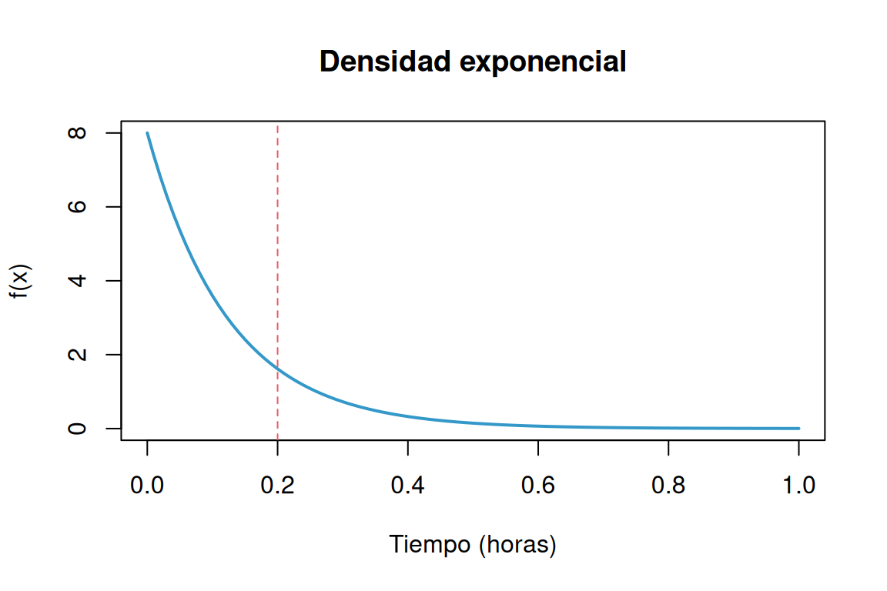
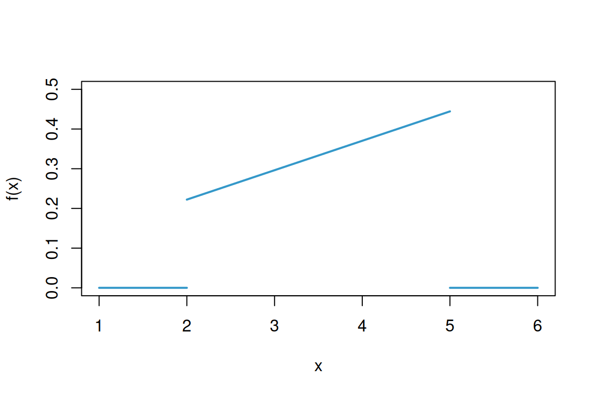
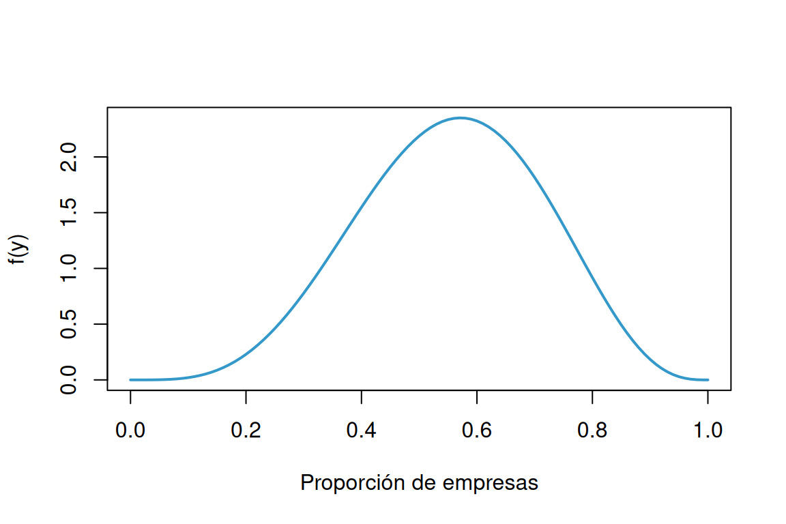
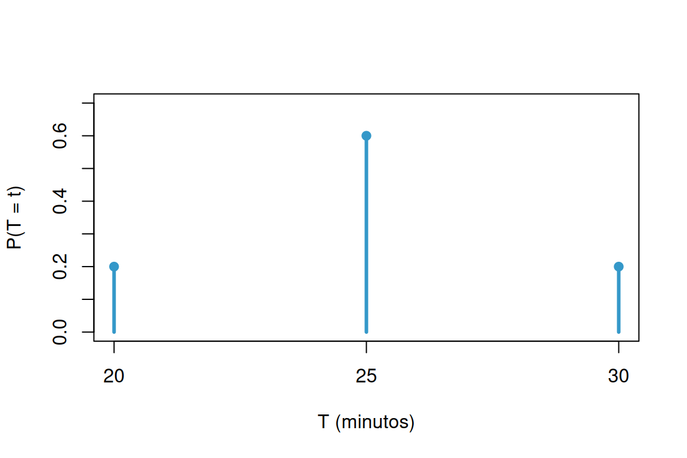
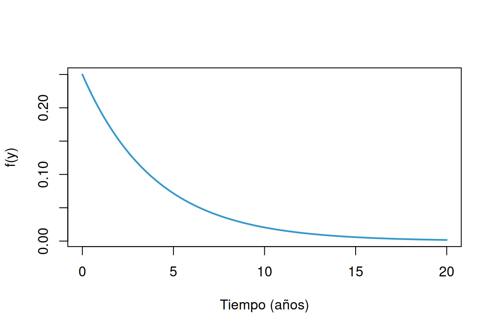
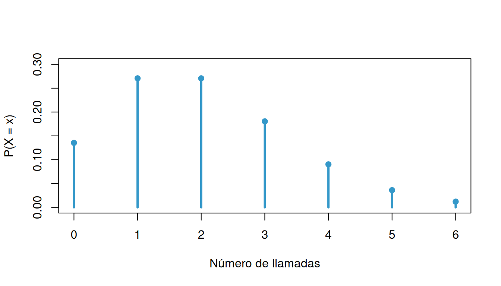
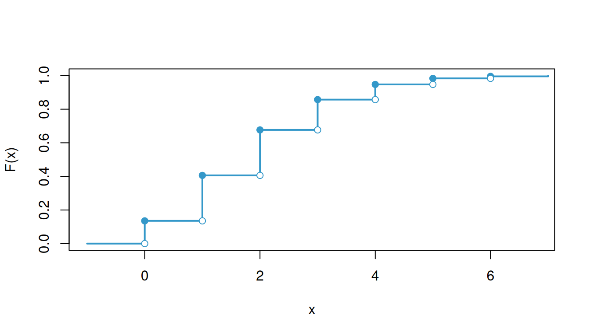
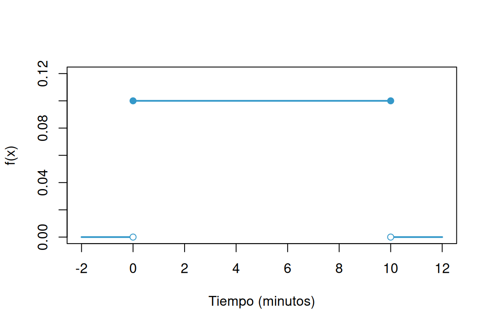

Clasifique las siguientes variables aleatorias como discretas o continuas:
Los conteos son discretos y las mediciones se modelan como continuas. Si se considera estrictamente la unidad monetaria mínima, el gasto y la utilidad toman valores discretos.
El tiempo que pasa, en horas, para que un radar detecte entre conductores sucesivos a los que exceden los límites de velocidad es una variable aleatoria continua con una función de distribución acumulada:
\[F_{_{X}}(x) = \left \{ \begin{matrix} 0 & \mbox{ , } x \leq 0\\ 1-exp\{-8x \} & x \geq 0 \end{matrix}\right. \]
Calcule la probabilidad de que el tiempo que pase para que el radar detecte entre conductores sucesivos a los que exceden los límites de velocidad sea menor a 12 minutos
Primero se convierten los minutos a horas: \(12/60=0.2\) horas.
\[ f_X(x)=\begin{cases}8e^{-8x},&x>0,\\0,&x<0.\end{cases} \]
El valor de la densidad en \(x=0\) no afecta las probabilidades. Por tanto,
\[P(X<0.2)=\int_0^{0.2}8e^{-8x}\,dx=[-e^{-8x}]_0^{0.2}\approx0.798103.\]
La probabilidad es aproximadamente 79.81%.
curve(dexp(x, rate = 8), from = 0, to = 1, col = c31, lwd = 2,
xlab = "Tiempo (horas)", ylab = "f(x)", main = "Densidad exponencial")
abline(v = 0.2, lty = 2, col = c21)
Una variable aleatoria continua \(X\), que puede tomar valores entre \(x=2\) y \(x=5\), tiene una función de densidad data por:
\[ f_X(x)= \begin{cases} \dfrac{2(1+x)}{27}, & 2\leq x\leq 5, \\[6pt] 0, & \text{en otro caso}. \end{cases} \]
Calcule:
Una primitiva de la densidad en su soporte es \((2x+x^2)/27\).
curve(2 * (1 + x) / 27, from = 2, to = 5, xlim = c(1, 6),
ylim = c(0, 0.5), col = c31, lwd = 2, xlab = "x", ylab = "f(x)")
segments(c(1, 5), 0, c(2, 6), 0, col = c31, lwd = 2)
Suponga que cierto tipo de pequeñas empresas de procesamiento de datos están tan especializadas que algunas tienen dificultades para obtener utilidades durante su primer año de operación. La función de densidad de probabilidad está dada por:
\[f_{_{Y}}(y) = \left \{ \begin{matrix} ky^4 (1-y)^3 & \mbox{ , } 0 \leq y \leq 1\\ 0 & \mbox{en otro caso } \end{matrix}\right. \]
Se interpreta \(Y\) como la proporción de empresas que obtienen utilidades.
\[1=k\int_0^1 y^4(1-y)^3\,dy =k\left(\frac15-\frac36+\frac37-\frac18\right)=\frac{k}{280}, \qquad k=280.\]
Estas integrales se evalúan con la primitiva \(280(y^5/5-y^6/2+3y^7/7-y^8/8)\). También se reconoce una distribución beta con parámetros \(5\) y \(4\).
curve(dbeta(x, shape1 = 5, shape2 = 4), from = 0, to = 1,
col = c31, lwd = 2, xlab = "Proporción de empresas", ylab = "f(y)")
En un grupo de 10 estudiantes que participan en un proyecto universitario, 5 pertenecen a Ingeniería Industrial, 2 a Finanzas y 3 a Administración de Empresas. Para conformar un equipo de trabajo se seleccionan aleatoriamente 4 estudiantes, sin reemplazo.
Sea \(X\) el número de estudiantes de Ingeniería Industrial seleccionados. Determine la función de probabilidad de \(X\) y explique sus resultados utilizando una fórmula apropiada.
Como la selección es sin reemplazo, \(X\) tiene distribución hipergeométrica. Hay \(\binom{10}{4}=210\) equipos igualmente probables. Para obtener \(x\) estudiantes de Ingeniería se eligen \(x\) de los \(5\) de Ingeniería y \(4-x\) de los otros \(5\):
\[P(X=x)=\frac{\binom{5}{x}\binom{5}{4-x}}{\binom{10}{4}},\qquad x=0,1,2,3,4,\]
y la probabilidad es cero para los demás valores.
| \(x\) | 0 | 1 | 2 | 3 | 4 |
|---|---|---|---|---|---|
| \(P(X=x)\) | \(1/42\) | \(5/21\) | \(10/21\) | \(5/21\) | \(1/42\) |
Las probabilidades suman \(1\). El resultado más probable es seleccionar dos estudiantes de Ingeniería, con probabilidad \(10/21\approx0.476190\).
En una cafetería universitaria hay 6 pedidos listos para entregar: 4 tienen un tiempo estimado de entrega de 10 minutos cada uno y 2 de 5 minutos cada uno. Un domiciliario selecciona aleatoriamente 3 pedidos, sin reemplazo, para realizar su siguiente recorrido.
Sea \(T\) la suma de los tiempos estimados de entrega de los tres pedidos seleccionados.
Determine la función de probabilidad de \(T\) y represente gráficamente la distribución obtenida.
Sea \(K\) el número de pedidos de 10 minutos seleccionados. Entonces \(T=10K+5(3-K)=15+5K\). Como solo hay dos pedidos de 5 minutos, \(K\in\{1,2,3\}\).
\[P(K=k)=\frac{\binom4k\binom2{3-k}}{\binom63},\qquad \binom63=20.\]
| \(k\) | \(t\) (minutos) | \(P(T=t)\) |
|---|---|---|
| 1 | 20 | \(4/20=0.2\) |
| 2 | 25 | \(12/20=0.6\) |
| 3 | 30 | \(4/20=0.2\) |
Para cualquier otro valor de \(t\), \(P(T=t)=0\).
tiempos <- c(20, 25, 30)
probabilidades <- dhyper(1:3, m = 4, n = 2, k = 3)
plot(tiempos, probabilidades, type = "h", lwd = 3, col = c31,
ylim = c(0, 0.7), xaxt = "n", xlab = "T (minutos)", ylab = "P(T = t)")
axis(1, at = tiempos)
points(tiempos, probabilidades, pch = 19, col = c31)
Con base en las pruebas extensas, el fabricante de una lavadora determinó que el tiempo \(Y\) (en años) para que el electrodoméstico requiera una reparación mayor se obtiene mediante la siguiente función de densidad de probabilidad :
\[f_{_{Y}}(y) = \left \{ \begin{matrix} \dfrac{1}{4} exp\{-y/4\} & \mbox{ , } y \geq 0\\ 0 & \mbox{en otro caso } \end{matrix}\right. \]
Los críticos considerarían que la lavadora es una ganga si no hay una probabilidad de que requiera una reparación mayor antes del sexto año. ¿Se puede considerar la lavadora como una ganga?
¿Cuál es la probabilidad de que a lavadora requiera una reparación mayor durante el primer año?
Represente la función \(f(x)\) gráficamente
La acumulada es \(F_Y(y)=1-e^{-y/4}\) para \(y\geq0\).
curve(dexp(x, rate = 1/4), from = 0, to = 20, col = c31, lwd = 2,
xlab = "Tiempo (años)", ylab = "f(y)")
Sea el número de llamadas telefónicas que recibe un conmutador durante un intervalo de 5 minutos una variable aleatoria \(X\) con la siguiente función de distribución de probabilidad:
\[ f_X(x)= \begin{cases} \dfrac{e^{-2}2^x}{x!}, & x=0,1,2,3,\ldots, \\[6pt] 0, & \text{en otro caso}. \end{cases} \]
La variable tiene distribución Poisson con parámetro \(\lambda=2\).
| \(x\) | \(P(X=x)\) | \(F_X(x)=P(X\leq x)\) |
|---|---|---|
| 0 | 0.135335 | 0.135335 |
| 1 | 0.270671 | 0.406006 |
| 2 | 0.270671 | 0.676676 |
| 3 | 0.180447 | 0.857123 |
| 4 | 0.090224 | 0.947347 |
| 5 | 0.036089 | 0.983436 |
| 6 | 0.012030 | 0.995466 |
En general,
\[F_X(x)=\begin{cases}0,&x<0,\\ e^{-2}\displaystyle\sum_{j=0}^{\lfloor x\rfloor}\frac{2^j}{j!},&x\geq0. \end{cases}\]
La acumulada es constante entre enteros y tiene saltos en ellos. Los valores de \(0\) a \(6\) no agotan el soporte: \(P(X>6)\approx0.004534\).
x <- 0:6
plot(x, dpois(x, lambda = 2), type = "h", lwd = 3, col = c31,
ylim = c(0, 0.3), xlab = "Número de llamadas", ylab = "P(X = x)")
points(x, dpois(x, lambda = 2), pch = 19, col = c31)
plot(c(-1, x, 7), c(0, ppois(x, 2), ppois(7, 2)), type = "s",
col = c31, lwd = 2, xlim = c(-1, 6.8), ylim = c(0, 1),
xlab = "x", ylab = "F(x)")
points(x, ppois(x, 2), pch = 19, col = c31)
points(x, ppois(x - 1, 2), pch = 21, bg = "white", col = c31)
El congestionamiento de pasajeros es un problema de servicio en los aeropuertos, en los cuales se instalan trenes para reducir la congestión. cuando se usa el tren el tiempo \(X\), en minutos, que toma viajar desde la terminal principal hasta una explanada específica tiene la siguiente función de densidad:
\[f_{_{X}}(x) = \left \{ \begin{matrix} \dfrac{1}{10} & \mbox{ , } 0 \leq y \leq 10\\ 0 & \mbox{en otro caso } \end{matrix}\right. \]
En el soporte del enunciado se entiende \(0\leq x\leq10\) (la letra \(y\) es un error de notación).
plot(NA, xlim = c(-2, 12), ylim = c(0, 0.12),
xlab = "Tiempo (minutos)", ylab = "f(x)")
segments(c(-2, 0, 10), c(0, 0.1, 0), c(0, 10, 12), c(0, 0.1, 0),
col = c31, lwd = 2)
points(c(0, 10), c(0.1, 0.1), pch = 19, col = c31)
points(c(0, 10), c(0, 0), pch = 21, bg = "white", col = c31)
Problemas tomado de walpole (2006)
Suponga que:
\[ f_X(x)= \begin{cases} e^{-x}, & x\geq 0, \\[4pt] 0, & x<0. \end{cases} \]
Determine :
Para \(x\geq0\), \(F_X(x)=1-e^{-x}\).
El cuantil de orden \(p\) satisface \(1-e^{-q_p}=p\), de donde \(q_p=-\ln(1-p)\).
Para una variable aleatoria con función de densidad :
\[ f_X(x)= \begin{cases} \dfrac{x}{8}, & 3<x<5, \\[4pt] 0, & \text{en otro caso}. \end{cases} \]
Determine :
Al integrar la densidad se obtiene
\[F_X(x)=\begin{cases}0,&x\leq3,\\(x^2-9)/16,&3<x<5,\\1,&x\geq5.\end{cases}\]
Suponga que \(X\) tiene una función de distribución acumulada :
\[F_{_{X}}(x) = \left \{ \begin{matrix} 0 & \mbox{ , } x \leq 0\\ 2x & \mbox{, } x < 0 < x 5 \\ 1 & \mbox{ , } 5 \leq 5 \end{matrix}\right. \]
Determine:
Nota sobre el enunciado: la expresión escrita no define una acumulada válida: \(2x\) supera \(1\) en parte del intervalo hasta \(5\) y las condiciones de los tramos están mal transcritas. Para resolver se supone que la intención era \(F_X(x)=0.2x=x/5\) en \(0<x<5\), como en los problemas 1.16 y 1.20:
\[F_X(x)=\begin{cases}0,&x\leq0,\\x/5,&0<x<5,\\1,&x\geq5.\end{cases}\]
Bajo esta interpretación:
Los resultados quedan sujetos a esta corrección; la fórmula original no permite obtener probabilidades válidas.
Para la variable aleatoria que tiene la siguiente función de distribución de probabilidad :
| \(x\) | \(-2\) | \(-1\) | \(0\) | \(1\) | \(2\) |
|---|---|---|---|---|---|
| \(f(x)\) | \(1/8\) | \(2/8\) | \(2/8\) | \(2/8\) | \(1/8\) |
Determine:
Para una variable con función de distribución de probabilidad :
\[f_{_{X}}(x) = \left \{ \begin{matrix} \dfrac{2x + 1}{25} & \mbox{ , } x=0, 1, 2, 3, 4\\ 0 & \mbox{en otro caso } \end{matrix}\right. \]
Determine:
Para una variable aleatoria con función de distribución de probabilidad:
\[ f_X(x)= \begin{cases} \dfrac{3}{4}\left(\dfrac{1}{4}\right)^x, & x=0,1,2,3,\ldots, \\[6pt] 0, & \text{en otro caso}. \end{cases} \]
Es una distribución geométrica que cuenta fallos antes del primer éxito, con \(p=3/4\) y \(1-p=1/4\).
Sponga que \(X\) tiene una función de probabilidad acumulada:
\[F_{_{X}}(x) = \left \{ \begin{matrix} 0 & \mbox{ , } x \leq 0\\ 0.2 x & \mbox{, } 0 < x < 5 \\ 1 & \mbox{ , } x \geq 5 \end{matrix}\right. \]
Determine: * \(P(X < 2.8)\)
\[f_X(x)=\begin{cases}0.2,&0<x<5,\\0,&\text{en otro caso}.\end{cases}\]
Fx <- function(x) pmin(1, pmax(0, 0.2 * x))
Fx(2.8)[1] 0.56El tiempo de reparación (en minutos) de una máquina fotocopiadora tiene una función de densidad:
\[f_{_{X}}(x) = \left \{ \begin{matrix} \dfrac{1}{22} exp\{-x/22\} & \mbox{ , } x > 0\\ 0 & \mbox{en otro caso } \end{matrix}\right. \]
Cuando el profesor de Probabilidad y Estadística se preparaba para imprimir el cuestionario del segundo examen parcial, fue enterado por la secretaria del departamento que la máquina fotocopiadora se había averiado y que el técnico había acabado de llegar en ese instante y empezado a repararla. El profesor debe contar con por lo menos 10 minutos extras - tiempo de fotocopiado de 35 exámenes, organizar sus respectivas hojas de respuestas, sumado tiempo de su desplazamiento hasta el salón de clase, arreglo de las mesas y entrega de los cuestionarios a los estudiantes. Al mirar el reloj, el profesor observa que faltan 20 minutos para la hora en que debe empezar el examen y decide esperar a que el técnico repare la fotocopiadora. ¿Es acertada o no la decisión que tomó el profesor? Justifique su respuesta.
Para empezar a tiempo, la reparación debe terminar en los \(20-10=10\) minutos disponibles. Como \(X\) es exponencial con media de \(22\) minutos,
\[P(X\leq10)=\int_0^{10}\frac1{22}e^{-x/22}\,dx =1-e^{-10/22}\approx0.365264.\]
La probabilidad de retrasarse es \(P(X>10)=e^{-10/22}\approx0.634736\), aproximadamente 63.47%.
Si el criterio es tener una probabilidad alta de iniciar puntualmente, no es una decisión acertada: solo tiene alrededor de 36.53% de probabilidad de lograrlo. Una decisión óptima en términos de costos también dependería de las alternativas disponibles y de las consecuencias del retraso, que no se especifican.
Suponga que:
\[ f_X(x)= \begin{cases} e^{-x}, & x\geq 0, \\[4pt] 0, & x<0. \end{cases} \]
Determine :
Se trata de una exponencial con tasa \(\lambda=1\).
Para una variable aleatoria con función de densidad :
\[ f_X(x)= \begin{cases} \dfrac{x}{8}, & 3<x<5, \\[4pt] 0, & \text{en otro caso}. \end{cases} \]
Determine :
\[\mu_X=E[X]=\int_3^5x\frac{x}{8}\,dx =\left[\frac{x^3}{24}\right]_3^5=\frac{49}{12}\approx4.083333.\]
\[E[X^2]=\int_3^5x^2\frac{x}{8}\,dx =\left[\frac{x^4}{32}\right]_3^5=17,\]
\[V[X]=17-\left(\frac{49}{12}\right)^2=\frac{47}{144}, \qquad \sigma_X=\frac{\sqrt{47}}{12}\approx0.571305.\]
Suponga que \(X\) tiene una función de distribución acumulada:
\[ F_X(x)= \begin{cases} 0, & x<0, \\[4pt] \dfrac{x}{5}, & 0\leq x<5, \\[4pt] 1, & x\geq 5. \end{cases} \]
Determine :
La acumulada corresponde a \(X\sim U(0,5)\), con densidad \(1/5\) en ese intervalo.
\[CV=\frac{\sigma_X}{\mu_X}\times100\% =\frac{5/\sqrt{12}}{2.5}\times100\% =\frac1{\sqrt3}\times100\%\approx57.74\%.\]
Para la variable aleatoria que tiene la siguiente función de distribución de probabilidad :
| \(x\) | \(-2\) | \(-1\) | \(0\) | \(1\) | \(2\) |
|---|---|---|---|---|---|
| \(f(x)\) | \(1/8\) | \(2/8\) | \(2/8\) | \(2/8\) | \(1/8\) |
Determine :
Por tanto, \(V[X]=E[X^2]-(E[X])^2=3/2=1.5\).
Para una variable con función de distribución de probabilidad :
\[f_{_{X}}(x) = \left \{ \begin{matrix} \dfrac{(2x + 1)}{25} & \mbox{ , } x=0, 1, 2, 3, 4\\ 0 & \mbox{en otro caso } \end{matrix}\right. \]
Determine :
Entonces,
\[V[X]=\frac{46}{5}-\left(\frac{14}{5}\right)^2=\frac{34}{25}=1.36.\]
Para una variable aleatoria con función de distribución de probabilidad:
\[ f(x)=\frac{3}{4}\left(\frac{1}{4}\right)^x, \qquad x=0,1,2,3,\ldots \]
Determine :
La distribución es geométrica sobre \(\{0,1,2,\ldots\}\), con probabilidad de éxito \(p=3/4\).
Estas fórmulas corresponden al número de fallos antes del primer éxito, de acuerdo con el soporte que inicia en cero.
Problemas tomados de Mongomery(2003)
Una de las preocupaciones que tienen los padres hoy en dia está relacionada con el tiempo que pasan sus hijos usando celular. Un estudio determinó que el número de llamadas que un joven realiza durante un dia es una variable aleatoria (\(X\)) con función de distribución :
\[f_{_{X}}(x) = \left \{ \begin{matrix} \dfrac{8^{x}\hspace{.2cm} exp\{-8\}}{x!} & \mbox{ , para } \hspace{.3cm} x = 0,1,2,3,4,5,.....\\ 0 & \mbox{en otro caso } \end{matrix}\right. \]
El estudio afirma también que los jóvenes en promedio reciben al rededor de 12 llamadas por día, valor que es considerado muy alto, debido a que a esa edad por lo regular no se tienen actividades económicas que lo ameriten. También mencionan que debido a que se ha logrado identificar la función de distribución de probabilidad es fácil establecer que se trata de una variable con un comportamiento homogéneo. ¿Está de acuerdo con la información suministrada en el artículo? . Justifique su respuesta.
La función dada corresponde a una distribución Poisson con parámetro \(\lambda=8\). Por tanto,
\[E[X]=8,\qquad V[X]=8,\qquad \sigma_X=\sqrt8\approx2.828427,\]
\[CV=\frac{\sqrt8}{8}\times100\%\approx35.36\%.\]
Por estas razones, la información del artículo no justifica todas sus conclusiones.